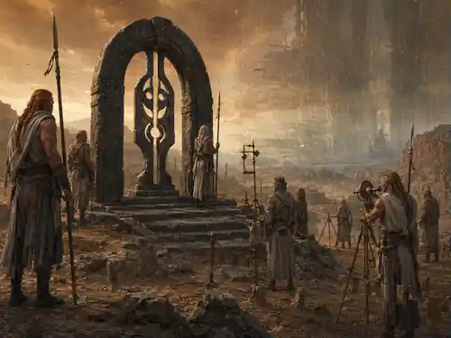
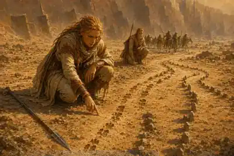

Великая перманентная аномалия континентального масштаба: Ореол, Ядро, STAB, Метки Узора и три способа пересечения.
Происхождение фронта, его движение, Стражи Проходов, Узел Ядра и Якоря.
Аномальная Стена — Великая перманентная аномалия континентального масштаба. Она возникла из временной аномалии 10-го рейтинга во время Великого выброса у Кинжала Убийцы Родни примерно в 20–30 ПБ. Выброс не разошёлся обычным пятном: он зацепился за напряжённый географический шов Хребта Мира и превратился в протяжённый фронт несогласованной реальности.
Сегодня Стена тянется от северного предела у Шайол Гул вдоль Хребта Мира и далее к южным широтам. Её исследованная линия дрейфует: отдельные участки могут смещаться на десятки миль, образовывать локальные «языки» и открывать редкие окна перехода. Южное продолжение теряется в плохо картографированных широтах; глобальная форма фронта достоверно не установлена.
Известно, что крупные аномальные события, масштабное направление Единой Силы, войны и операции стабилизации нередко совпадают с последующими сдвигами фронта. Стражи и исследователи называют это перераспределением натяжения Узора, однако это остаётся рабочей теорией, а не доказанной физикой Стены.
| Область | Подзона | Смысл |
|---|---|---|
| Ореол (Тень) | Внешняя Тень | Реальность шумит, но подготовленная группа способна работать и двигаться. |
| Внутренняя Тень | Искажения сильнее, маршруты нестабильны, безопасное движение требует подготовки. | |
| Ядро (Гребень) | Гребень | Центральная область прямого слома реальности. Обычный пеший проход практически невозможен. |
В течение первого столетия после появления Стены айил переопределили часть своей старой миссии. Одним из новых направлений стали Стражи Проходов: хранители перевалов, окон дрейфа и караванных коридоров. Их обычная подготовка — дисциплина, навигация, выживание и многолетнее знание фронта — сама по себе не является сверхъестественной Иерархией.
Иерархия Аномальной Стены — отдельная связь с самой Стеной, доступная лишь части Стражей Проходов и другим допущенным людям. Она возникла в айильской среде, но не является расово закрытой системой.
Сердцем ранговой системы считается Узел Ядра. В старых технических записях встречается синоним Реактор Стены. Первый Проводник достиг Ядра, установил связь с Узлом и заложил систему рангового доступа. Для членов Иерархии существование Узла не является тайной.
Энергия не «передаётся» от одного иерарха другому вверх по цепи: каждый допуск открывает более глубокий уровень прямого взаимодействия с Узлом. Ранговые способности не являются плетениями Единой Силы, не расходуют ячейки и не увеличивают параметры направления.
Якоря — древние стационарные Арки, вокруг которых локальный дрейф Стены замедляется и становится предсказуемее. Современная сеть постов Стражей Проходов строит вокруг них измерения, караванную логистику и прогнозы окон. Их точная внутренняя природа остаётся предметом исследований.

Шум Узора, дрейф, групповая STAB, Удары среды и правила восстановления маршрута.
Если у группы нет проводника или надёжных меток маршрута, проверки Мудрости (Выживание), совершаемые именно для навигации внутри Ореола, проходят с помехой.
Один раз за сутки при длительной работе у фронта Мастер может бросить 1d6:
| 1d6 | Дрейф |
|---|---|
| 1–3 | Заметного дрейфа нет. |
| 4–5 | Появляется локальный «язык» фронта или сдвиг маршрута; карта предыдущего дня требует проверки. |
| 6 | Сильный язык фронта и вторичная вспышка: Мастер добавляет подходящее событие Ореола. |
При входе группы в Ореол определите исходное значение:
STAB = 10 + средний бонус мастерства группы, округлённый вниз. STAB принадлежит всей группе и отражает не «здоровье», а согласованность маршрута, ориентиров и движения.
Каждый час один назначенный лидер маршрута совершает одну проверку. Другой персонаж может применить обычную Помощь, если содержательно помогает выбранному подходу.
| Подход | Когда уместен |
|---|---|
| Мудрость (Выживание) | Рельеф, путь, погода, следы группы. |
| Мудрость (Восприятие) | Ложные ориентиры, повторяющиеся объекты, «неправильные» тени. |
| Интеллект (Расследование) | Сопоставление закономерностей дрейфа, следов и геометрии. |
| Интеллект (Единая Сила) | Только если направляющий реально читает нити или след плетений. |
СЛ: 14 во Внешней Тени и 17 во Внутренней Тени. Обычный провал: STAB −1. Провал на 5 или больше: STAB −2 и немедленно один Удар среды.

Вне Ореола после завершения продолжительного отдыха STAB возвращается к исходному значению. Внутри Ореола восстановить его можно только в безопасном лагере или специальным способом — через проводника, ритуал, тер'ангриал или иной прямо установленный эффект. Продолжительный отдых в безопасном лагере восстанавливает STAB до исходного значения группы; обычный продолжительный отдых внутри Ореола вне безопасного лагеря STAB не восстанавливает.
| STAB | Состояние | Последствие |
|---|---|---|
| 9–7 | Нестабильность | Случайный персонаж делает спасбросок Мудрости СЛ 14. При провале бросьте 1d2: 1 — 1 уровень истощения; 2 — Сбой восприятия: помеха на следующую его проверку Мудрости (Восприятие) или «Держать маршрут». |
| 6–4 | Петли и срывы | Группа теряет 1d4 часа и получает один Удар среды. |
| 3–1 | Пролом формы | Каждый участник делает спасбросок Телосложения СЛ 15: провал — 2 уровня истощения, успех — 1. Затем происходит одна встреча с существами аномального происхождения, соответствующими текущему участку Стены. |
| 0 | Срыв | Группа проваливается в Ядро или локальный карман Ядра. |
| 1d8 | Эффект |
|---|---|
| 1 | Энергетический выброс. Каждый участник сопровождаемой группы: Ловкость СЛ 14; провал — 3d6 силового урона, успех — половина. |
| 2 | Холод или жара без причины. Телосложение СЛ 14; провал — 1 уровень истощения. |
| 3 | Сдвиг гравитации. Ловкость СЛ 14; провал — персонаж падает ничком, скорость 0 до начала его следующего хода. |
| 4 | Сбой звука / эхо мыслей. Мудрость СЛ 14; провал — помеха на броски атаки до конца следующего хода. |
| 5 | Ложный ориентир. Следующая проверка «Держать маршрут» совершается с помехой; если она провалена, группа дополнительно теряет 1d4 часа. |
| 6 | Сонный прилив. Харизма СЛ 14; провал — на 10 минут помеха на спасброски Телосложения для поддержания концентрации. |
| 7 | Тонкая трещина. Возникает малый разрыв: одно существо или 1d4 мелких существ аномального происхождения. |
| 8 | Метка Узора. Случайное затронутое существо получает Метку Узора; бросьте 1d6 по таблице ниже. |
Шесть Меток Узора, невозможная среда Ядра и Слом формы.
| 1d6 | Метка | Эффект |
|---|---|---|
| 1 | Запах шва | Существо с тегом «Аномальное происхождение», выбирая между равноценными доступными целями, предпочитает носителя Метки, если нет более веской тактической причины. |
| 2 | Сдвиг сна | Продолжительный отдых восстанавливает только половину недостающих хитов и половину обычного количества Костей Хитов, округляя вверх. Ячейки и прочие ресурсы восстанавливаются обычно. |
| 3 | Дыра во времени | Не чаще 1 раза за 24 часа в начале хода Мастер может лишить персонажа действия. Перемещение, бонусное действие и реакции сохраняются. |
| 4 | Осколок памяти | Игрок и Мастер выбирают один эпизод последних 24 часов, который персонаж перестаёт помнить. Метка не удаляет навыки, плетения, классовые способности, характеристики или основные знания личности. |
| 5 | Резонанс | 1 раз за 24 часа — преимущество на проверку, непосредственно направленную на обнаружение или понимание аномалии. Первые 24 часа после получения Метки — уязвимость к психическому урону. |
| 6 | Редкая удача | 1/продолжительный отдых после броска атаки, спасброска или проверки, но до объявления результата, добавить 1d4. При первом использовании этой Метки персонаж получает 1 уровень истощения. |
В безопасном лагере, стационарном посту Стражей Проходов, у Ордена или в другом месте со специалистом и подходящими средствами одна выбранная Метка может быть очищена за время продолжительного отдыха без проверки. Разные Метки могут существовать одновременно; одинаковые эффекты не складываются.
Обычный проход через Ядро пешком считается практически невозможным. Если группа всё же входит в Гребень, каждые 10 минут каждый участник делает два спасброска.
| Спасбросок | Успех | Провал |
|---|---|---|
| Телосложение СЛ 18 | 1 уровень истощения и половина 4d10 урона. | 2 уровня истощения и полный 4d10 урона. |
| Мудрость СЛ 18 | Без дополнительного эффекта. | Слом формы — бросьте 1d4 или выберите подходящий вариант. |
Тип 4d10 определяет Мастер по характеру участка: силовой или психический.
| 1d4 | Результат |
|---|---|
| 1 | Паника. Персонаж испуган до конца своего следующего хода. Само Ядро считается источником страха; пока эффект действует, персонаж не может добровольно двигаться глубже в Ядро. |
| 2 | Ступор. Скорость 0; нельзя совершать действия и реакции до конца следующего хода. |
| 3 | Петля. Первое перемещение до конца следующего хода расходуется нормально, но после него персонаж возвращается в точку, откуда начал перемещение. |
| 4 | Подмена восприятия. До конца следующего хода помеха на броски атаки и проверки Мудрости (Восприятие). |
Внутри Ядра обычная навигация не даёт надёжного результата. Работают жёсткие метки и маяки, высококлассный проводник или специальный метод пересечения.
Окно дрейфа, Сквозь Сон, Тоннель согласованности и правила караванов.
Переход состоит из 6 сегментов. На каждом сегменте лидер маршрута обязательно совершает одну проверку «Держать маршрут» СЛ 17. Дополнительно Мастер может ввести событие среды. За весь переход допускается не более 2 боевых встреч; остальные события создают давление среды. После второго и каждого последующего проваленного сегмента Мастер может объявить окно сорванным и перевести группу в локальный карман Ядра, если состояние окна и сцена это допускают.
После второго проваленного сегмента и после каждого последующего провала Мастер получает право объявить окно сорванным и перевести группу в локальный карман Ядра, если состояние сцены это допускает. Обычные последствия самих провалов сохраняются.
Обход Стены через Тел’аран’риод. Требуется сновидец/проводник либо иной редкий метод входа и заранее определённый якорь выхода — место, предмет или знание, позволяющее зафиксировать конечную точку.
Назначенный проводник сна совершает три проверки Мудрости (Проницательность): Вход СЛ 15, Транзит СЛ 17, Выход СЛ 15. Черты, которые прямо улучшают соответствующие действия в Тел’аран’риоде, работают обычно.
1 провал: случайный участник получает Метку Узора. 2 провала: группа выходит не в запланированное время или не у запланированного якоря выхода, оставаясь на нужной стороне Стены. 3 провала: до завершения перехода происходит встреча с сильной сущностью Тел’аран’риода; после выхода каждый участник теряет фрагмент памяти о самом переходе или событиях непосредственно перед ним по правилу Осколка памяти.
Редкий силовой метод, доступный структурам с огромными ресурсами. Создаётся коридор на 1d6 минут. Его срок не приостанавливается из-за боя или остановки. Если последний участник не покинул тоннель до окончания времени либо коридор был специально разрушен, все оставшиеся внутри выбрасываются во Внутреннюю Тень с STAB 3.
«Прожиг» — распространённое полевое название Тоннеля согласованности.
Обычный караван не пересекает Стену без открытого окна дрейфа и охраны уровня подготовленной группы приключенцев либо поддержки организации. Практический ритм перехода обычно прост: подход к фронту → ожидание окна → быстрый прорыв → отход на безопасное плато.